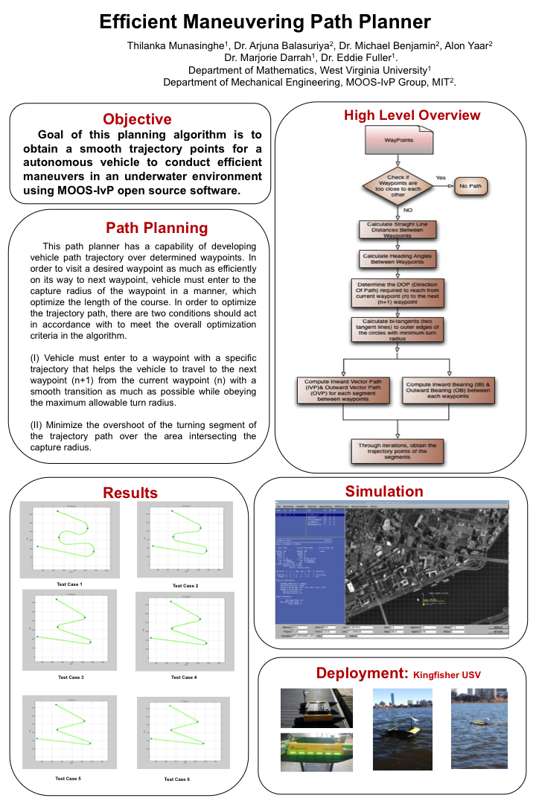

I was at MIT’s Laboratory for Autonomous Marine Sensing Vehicles as a visiting research student in 2014. I collaborated with the research staff on autonomous underwater vehicles by developing designs for several path planning algorithms and extended the open source Mission Oriented Operating Suite-Interval Programming (MOOS-IvP) project by introducing a smooth curve path planner. This path planner was capable of visiting a desired waypoint as efficiently as possible on its way to the next waypoint. The optimization criteria obeyed the maximum allowable turn radius, while minimizing the turning segment of the trajectory path over the area intersecting the capture radius.
Here is a research poster I presented at the Google I/O 2014 Research Lab.
